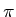
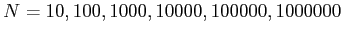
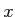
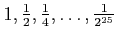
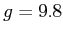
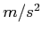
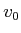
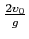
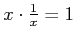

The value of  can be estimated by evaluating a partial sum of the form
Write a script named approxPi.m which computes the first
million terms of this series. Then use cumsum to compute the
partial sums (as was done in the sample solutions from lecture).
As a final result, calculate the approximate values of pi for

number of terms in the partial sum. Store the results in a vector called
approximation.
For this problem, we want you to gather empirical evidence for that limit by evaluating the expression for progressively smaller values. Specifically, write a script named limits.m that creates a vector called limit by evaluating the expression for values of  in the series . Display your results by executing the following commands:
format long; disp(limit');
For this problem, we consider the motion of a ball under the force of
gravity (we will ignore other factors such as air resistance). Let  be the acceleration due to gravity, measured in . If a
ball is thrown vertically with an initial velocity of , measured
in meters/second), it will remain in the air for

seconds. Its height at time measured in meters will be
Write a script baseball.m that creates a vector named time with 25 evenly spaced values from  to
. Then
compute another vector named height that tracks the
corresponding height for each time, using the above formula.
to
. Then
compute another vector named height that tracks the
corresponding height for each time, using the above formula.
Test your program using an initial velocity of 43.81 meters/second (the equivalent of a 98 m.p.h. fastball). To produce a two-column display of your results, use the command disp( [time', height'] );
Lastly, use the max function to find the maximum value of your height vector, and store this in a variable called maxHeight
For any non-zero real number, we have the identity that . However, computers do not perform arithmetic with arbitrary precision. Instead, they use a convention known as floating-point representation for storing and manipulating numbers with fixed precision. We can find evidence of this by trying to verify the above mathematical identity. If you perform the test 3 * (1 / 3) == 1, you will likely see that the equivalence is true (with the logical true value displayed as ``1'' in matlab). Yet if you perform the similar test 49 * (1 / 49) == 1, the condition is false (with the logical false value displayed as ``0'' in matlab).
Write a script named floatingError.m that performs the following experiment. Determine what percentage of the first 100000 integers successfully satisfy the identity when computed in MATLAB. Count how many integers satisfy the identity in a variable called numCorrect, and store the percentage of correct integers in a variable called correctRate.